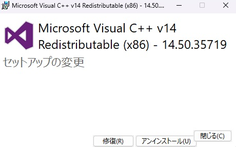

こんにちは、Japan Developer Support Core チームの上原です。
今回は、Visual C++ Redistributable(再頒布可能パッケージ) を修復する方法についてご紹介します。
はじめに
弊社サポート窓口にお問い合わせいただく事例の中で、システムにインストールされている Visual C++ Redistributable が破損し、アップデートや Visual C++ アプリケーションの動作に問題が生じるケースがあります。 そのような破損が疑われる場合には、Visual C++ Redistributable の修復を実施することで問題が解消する可能性がありますので、本記事では Visual C++ Redistributable の修復方法についてご案内いたします。
なお、Visual C++ Redistributable に関する一般的なトラブルシューティングは、こちらの記事 に紹介がありますので、こちらも併せてご確認ください。
注意: 本記事では Visual C++ 2015 以降のバージョンを、特に現在サポートされている Visual C++ 2017 以降のバージョンを前提にご説明しております。
概要
Visual C++ Redistributable における修復とは、主にインストーラーから再度インストール(修復インストール) を実行することで、インストールしたファイルやレジストリの正常化を試みるものです。 例えばシステムに Visual C++ バージョン 14.50 がインストールされており、修復を試みる場合には、バージョン 14.50 のインストーラーを実行し、修復を試みる必要があります。
そのため、主な修復方法として (a)システム内のキャッシュを用いた修復方法 と、対応するインストーラーを入手して実施する (b)インストーラーを用いた修復方法 をご紹介します。
(a)システム内のキャッシュを用いた修復方法
通常、システムに Visual C++ Redistributable がインストールされると、修復やアンインストールに備えて、インストールに利用したインストーラーがシステムにキャッシュされます。 そのため、コントロールパネルや設定アプリなどのインストール済みアプリケーションの画面から、システムにキャッシュされたインストーラーを用いた修復を試みることができます。
例えば、Windows 11 version 25H2 では、スタートメニューの 設定/アプリ/インストールされているアプリ の画面から、修復対象の Visual C++ Redistributable の 変更 からインストーラーを実行し、表示されるダイアログから 修復 を実行します。

なお、OS により具体的な手順は異なりますので、詳細は 弊社ドキュメント をご参照ください。
(b)インストーラーを用いた修復方法
インストールされている Visual C++ が破損している状況によっては、システムにキャッシュされているインストーラーが利用できないという可能性もあります。 一例として、古いバージョンを削除できない ため、上位バージョンのインストールに失敗するという事例では、古いバージョンのインストーラーが破損・消失しており、システムのキャッシュも含めて修復する必要があります。
このような場合には、システムでインストールされている Visual C++ Redistributable と同一バージョンのインストーラーを入手し、入手したインストーラーを実行することで修復を実施する必要があります。
Visual C++ Redistributable バージョンの確認
システムにインストールされている Visual C++ Redistributable のバージョンは、システムの 設定/アプリ/インストールされているアプリ の画面などから、バージョン 14.x といった表記で確認することが可能です。 なお、Visual C++ Redistributable には、x86、x64 などがそれぞれ独立したソフトウェアとして提供されていますので、修復対象のアーキテクチャについてもあわせてご確認ください。
また、インストールされている Visual C++ Redistributable のバージョン番号は、ドキュメント 記載の以下のレジストリからもご確認いただけます。
1 | HKEY_LOCAL_MACHINE\SOFTWARE\Wow6432Node\Microsoft\VisualStudio\14.0\VC\Runtimes\{x86|x64|arm64} |
インストーラーの入手
修復対象のバージョンに対応する Visual C++ Redistributable のインストーラーについては、こちらのドキュメント 記載の手順と URL で入手することが可能です。
一例として、バージョン 14.30 から 14.44 のインストーラーは https://aka.ms/vs/17/release/<version>/VC_redist.<arch>.exe という形式で表記されるため、バージョン 14.32.31332 のインストーラーは https://aka.ms/vs/17/release/14.32.31332/VC_redist.arm64.exe からダウンロードが可能です。
修復の実施
入手したインストーラーを起動し、表示されるダイアログから 修復 を実行することで、Visual C++ の修復を試みることが可能です。
具体的には、エクスプローラーから入手したインストーラー(例: vc_redist.x64.exe) をダブルクリックで起動し、表示されるダイアログから 修復 を実施します。
あるいは、コマンドプロンプトから /repair オプションを付与し、実行いただくことも可能です。
1 | vc_redist.x64.exe /repair |
参考情報: 原因調査について
Visual C++ Redistributable の破損について、弊社サポート窓口では破損に至った原因の調査をご要望いただくことがあります。 しかしながら、多くの場合、破損に至った原因の調査には、Visual C++ が破損した時点の状況を再現する必要があり、再現が難しい場合には、原因特定が困難であることが予想されます。
一例としまして、Visual C++ ランタイムに含まれる vcruntime140.dll が消失しているケースでは、ランタイムが存在しないことで、Visual C++ アプリケーションが起動せず、エラーが表示されるといった問題が発生します。
この場合、アプリケーションの起動に失敗する直接の要因は vcruntime140.dll が消失していることにありますが、ファイルが消失した、つまりファイルが削除された根本原因を特定するためには、削除された時点に遡って要因を調査する必要があります。 通常、過去に削除されたファイルを、未来の時点から遡って調査する方法はありませんので、このような状況の場合にはファイルが削除される状況を意図的に再現し、削除を行っているプロセスやサービスなどを特定するといったアプローチが必要となります。
上記のような事例では、調査には意図的に破損した時点を再現しての調査が必要となり、事象を意図的に再現することが難しい場合には、それ以上の調査が困難となります。
Visual C++ の破損には様々な状況や要因が想定されますので、私たちサポート窓口にお問い合わせいただいた事例の中には、稀にシステムに標準で出力されるログなどから要因を推測することが可能であったという報告もあります。 しかしながら、多くの場合、Visual C++ が破損した原因調査には、破損した時点を再現しての調査が必要となりますので、私どもサポート窓口に原因調査をご用命いただく際には、事前にクリーン環境から事象が再現可能であるかをご確認の上、お問い合わせいただけますと幸いです。
本ブログの内容は弊社の公式見解として保証されるものではなく、開発・運用時の参考情報としてご活用いただくことを目的としています。もし公式な見解が必要な場合は、弊社ドキュメント (https://learn.microsoft.com や https://support.microsoft.com) をご参照いただくか、もしくは私共サポートまでお問い合わせください。